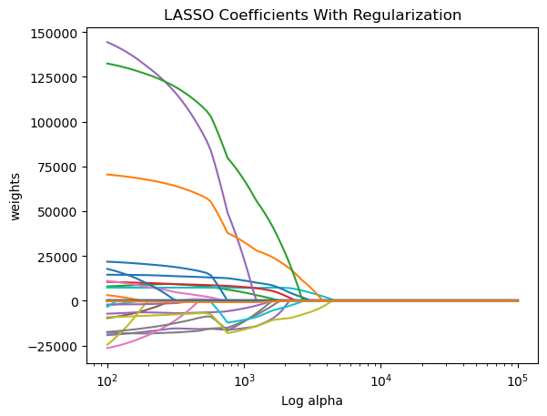

Code
# Importing necessary packages
import numpy as np
import matplotlib.pyplot as plt
import pandas as pd
from sklearn.linear_model import Lasso, LassoCV
from sklearn.model_selection import train_test_splitWe’ll be focus purely on implementing LASSO regression through Python. There’s a number of steps that you can take with your data (e.g. association tests, exploratory data analysis) before running straight to LASSO. But something interesting about regularized regression models is how they tend to filter out variables with high pair-wise correlations.
Remember that regularized regression models are just a start in understanding what variables you might want to include–they shouldn’t be the final verdict.
First, you’re going to need to setup your conda environment to install all the packages you will need to do a LASSO regression.
We’ll be using the following packages:
pandas for data collection and manipulationnumpy for vectorized mathematical operationssklearn for the Lasso regression model and train-test splittingmatplotlib for plotting / visualization capabilitiesNote: There is a package called rpy2 that will allow your to interface with R through Python. However, we won’t be using that during the presentation due to potential installation problems for different systems.
# Importing necessary packages
import numpy as np
import matplotlib.pyplot as plt
import pandas as pd
from sklearn.linear_model import Lasso, LassoCV
from sklearn.model_selection import train_test_splitThe Ames Housing dataset is a popular dataset describing characteristics of residential homes in Ames, Iowa. The goal is to predict the selling price of homes.
# Read in the AmesHousing data as a Pandas dataframe
ames = pd.read_csv('https://raw.githubusercontent.com/INRIA/scikit-learn-mooc/main/datasets/house_prices.csv')
ames.head()In this scenario, we’ve run through our initial exploratory analysis to filter our variables down to a subset of the original columns. We’re curious to see what variables are selected after fitting a LASSO regression.
We’ll break up our data into training and test sets to keep an honest assessment of our model. Next, we’ll do some basic preprocessing and encode our categorical variables as 1’s and 0’s so we can use them in our model.
# Split our data into train and test sets with a 70-30 split
train, test = train_test_split(ames, test_size=0.3, random_state=123)
# Select specific columns to base our model on
train = train[['SalePrice', 'LotArea', 'Street', 'BldgType', 'HouseStyle', 'OverallQual', 'RoofStyle', 'CentralAir', '1stFlrSF', '2ndFlrSF', 'FullBath', 'HalfBath', 'Fireplaces', 'GarageArea', 'GrLivArea', 'TotRmsAbvGrd']]
# Fill NA values with 0
train = train.fillna(0)# Reference encode our categorical variables so we can use them in our model
train_dummy = pd.get_dummies(train, columns=['Street', 'BldgType', 'HouseStyle', 'OverallQual', 'RoofStyle', 'CentralAir'])
train_dummy| SalePrice | LotArea | 1stFlrSF | 2ndFlrSF | FullBath | HalfBath | Fireplaces | GarageArea | GrLivArea | TotRmsAbvGrd | ... | OverallQual_9 | OverallQual_10 | RoofStyle_Flat | RoofStyle_Gable | RoofStyle_Gambrel | RoofStyle_Hip | RoofStyle_Mansard | RoofStyle_Shed | CentralAir_N | CentralAir_Y | |
|---|---|---|---|---|---|---|---|---|---|---|---|---|---|---|---|---|---|---|---|---|---|
| 376 | 148000 | 8846 | 914 | 0 | 1 | 0 | 0 | 576 | 914 | 5 | ... | False | False | False | True | False | False | False | False | False | True |
| 250 | 76500 | 5350 | 1306 | 0 | 1 | 0 | 0 | 0 | 1306 | 6 | ... | False | False | False | True | False | False | False | False | False | True |
| 228 | 125000 | 8521 | 912 | 0 | 1 | 0 | 1 | 336 | 912 | 5 | ... | False | False | False | True | False | False | False | False | False | True |
| 40 | 160000 | 8658 | 1324 | 0 | 2 | 0 | 1 | 440 | 1324 | 6 | ... | False | False | False | True | False | False | False | False | False | True |
| 428 | 195400 | 6762 | 1208 | 0 | 2 | 0 | 0 | 628 | 1208 | 6 | ... | False | False | False | True | False | False | False | False | False | True |
| ... | ... | ... | ... | ... | ... | ... | ... | ... | ... | ... | ... | ... | ... | ... | ... | ... | ... | ... | ... | ... | ... |
| 1041 | 173000 | 9130 | 800 | 832 | 1 | 1 | 0 | 484 | 1632 | 7 | ... | False | False | False | False | False | True | False | False | False | True |
| 1122 | 112000 | 8926 | 960 | 0 | 1 | 0 | 0 | 288 | 960 | 5 | ... | False | False | False | True | False | False | False | False | False | True |
| 1346 | 262500 | 20781 | 2156 | 0 | 2 | 0 | 1 | 508 | 2156 | 9 | ... | False | False | False | False | False | True | False | False | False | True |
| 1406 | 133000 | 8445 | 768 | 0 | 1 | 0 | 0 | 396 | 768 | 5 | ... | False | False | False | True | False | False | False | False | False | True |
| 1389 | 131000 | 6000 | 869 | 349 | 1 | 0 | 1 | 440 | 1218 | 6 | ... | False | False | False | True | False | False | False | False | False | True |
1022 rows × 43 columns
Using a LASSO model is super simple in Python. It’s just an sklearn.linear_model class that can take in an alpha argument which represents the penalty multiplier that we use when we fit the model. Here, we’ll select an arbitrary LASSO model with alpha = 2.0.
# Get our explanatory variable X and our response variable y from the training data
X = train_dummy.loc[:, train_dummy.columns.difference(['SalePrice'])]
y = train_dummy['SalePrice']
# Fit a Lasso regression model on our data
# alpha argument is the constant that multiplies the L1 penalty term
ames_lasso = Lasso(alpha = 2.0, max_iter=5000).fit(X, y)n_alphas = 100
alphas2 = np.logspace(2, 5, n_alphas)
print(alphas2)
coefs2 = []
for a in alphas2:
lasso = Lasso(alpha = a, max_iter=5000)
lasso.fit(X, y)
coefs2.append(lasso.coef_)[ 100. 107.2267222 114.97569954 123.28467394
132.19411485 141.74741629 151.9911083 162.97508346
174.75284 187.38174229 200.92330026 215.443469
231.01297001 247.7076356 265.60877829 284.80358684
305.38555088 327.45491629 351.11917342 376.49358068
403.70172586 432.87612811 464.15888336 497.70235643
533.66992312 572.23676594 613.59072734 657.93322466
705.48023107 756.46332755 811.13083079 869.74900262
932.60334688 1000. 1072.26722201 1149.7569954
1232.84673944 1321.94114847 1417.47416293 1519.91108295
1629.75083462 1747.52840001 1873.81742286 2009.23300257
2154.43469003 2310.12970008 2477.07635599 2656.08778295
2848.03586844 3053.85550883 3274.54916288 3511.19173422
3764.93580679 4037.0172586 4328.76128108 4641.58883361
4977.02356433 5336.69923121 5722.36765935 6135.90727341
6579.33224658 7054.80231072 7564.63327555 8111.3083079
8697.49002618 9326.03346883 10000. 10722.6722201
11497.56995398 12328.46739442 13219.41148466 14174.74162927
15199.11082953 16297.50834621 17475.28400008 18738.1742286
20092.33002565 21544.34690032 23101.29700083 24770.76355992
26560.87782947 28480.35868436 30538.55508833 32745.49162878
35111.91734215 37649.35806792 40370.17258597 43287.61281083
46415.88833613 49770.23564332 53366.99231206 57223.6765935
61359.07273413 65793.32246576 70548.02310719 75646.33275546
81113.08307897 86974.90026178 93260.33468832 100000. ]array([ 7.58586141e+01, 6.87534921e+01, 8.06245328e+03, 0.00000000e+00,
-1.91344950e+04, -9.62040948e+03, 0.00000000e+00, -1.78442184e+04,
6.00179124e-09, 7.39001176e+03, 1.45812277e+04, 3.97732184e+01,
-2.65970396e+01, 1.05649433e+04, -7.19032717e+03, 0.00000000e+00,
1.10925754e+04, -0.00000000e+00, -2.45439137e+04, -2.55194730e+03,
1.78437607e+04, 3.19144231e+03, 4.49387431e-01, -0.00000000e+00,
1.44380910e+05, -0.00000000e+00, -2.63501189e+04, -1.73616781e+04,
-9.09418794e+03, 0.00000000e+00, 2.18579234e+04, 7.04923264e+04,
1.32455817e+05, 0.00000000e+00, -2.07379138e+03, 0.00000000e+00,
0.00000000e+00, -0.00000000e+00, -0.00000000e+00, -3.38546796e+03,
8.51085289e-10, -2.49513981e+02])plt.cla()
ax = plt.gca()
ax.plot(alphas2, coefs2)
ax.set_xscale('log')
plt.xlabel('Log alpha')
plt.ylabel('weights')
plt.title('LASSO Coefficients With Regularization')
plt.axis('tight')(70.79457843841381,
141253.75446227554,
-34886.670318502176,
152917.46144539496)
ames_lasso_cv = LassoCV(cv=10, random_state=123).fit(X, y)
print(f'Chosen alpha: {ames_lasso_cv.alpha_}')
print(f'Weights: {ames_lasso_cv.coef_}')Chosen alpha: 208023.67636015863
Weights: [ 97.21482941 56.89753048 0. -0. -0.
0. 0. -0. 0. 0.
0. 111.35060367 8.07840357 0. -0.
0. 0. -0. -0. 0.
0. -0. 0.19542406 0. 0.
-0. -0. -0. -0. -0.
0. 0. 0. -0. -0.
-0. 0. -0. -0. -0.
0. -0. ]selected_features = pd.Series(ames_lasso_cv.coef_, index=X.columns)
selected_features1stFlrSF 97.214829
2ndFlrSF 56.897530
BldgType_1Fam 0.000000
BldgType_2fmCon -0.000000
BldgType_Duplex -0.000000
BldgType_Twnhs 0.000000
BldgType_TwnhsE 0.000000
CentralAir_N -0.000000
CentralAir_Y 0.000000
Fireplaces 0.000000
FullBath 0.000000
GarageArea 111.350604
GrLivArea 8.078404
HalfBath 0.000000
HouseStyle_1.5Fin -0.000000
HouseStyle_1.5Unf 0.000000
HouseStyle_1Story 0.000000
HouseStyle_2.5Fin -0.000000
HouseStyle_2.5Unf -0.000000
HouseStyle_2Story 0.000000
HouseStyle_SFoyer 0.000000
HouseStyle_SLvl -0.000000
LotArea 0.195424
OverallQual_1 0.000000
OverallQual_10 0.000000
OverallQual_2 -0.000000
OverallQual_3 -0.000000
OverallQual_4 -0.000000
OverallQual_5 -0.000000
OverallQual_6 -0.000000
OverallQual_7 0.000000
OverallQual_8 0.000000
OverallQual_9 0.000000
RoofStyle_Flat -0.000000
RoofStyle_Gable -0.000000
RoofStyle_Gambrel -0.000000
RoofStyle_Hip 0.000000
RoofStyle_Mansard -0.000000
RoofStyle_Shed -0.000000
Street_Grvl -0.000000
Street_Pave 0.000000
TotRmsAbvGrd -0.000000
dtype: float64selected_features[selected_features != 0]1stFlrSF 97.214829
2ndFlrSF 56.897530
GarageArea 111.350604
GrLivArea 8.078404
LotArea 0.195424
dtype: float64We can see that after running our cross-validation model, we are left with the following variables: